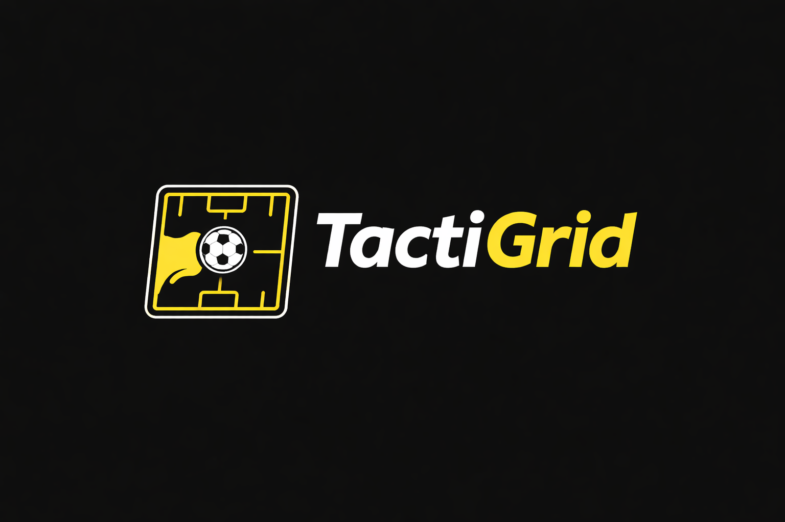

TactiGrid Drill Designer
Design drills, add notes, export PNG/PDF
➖
⤾
➕
➕
Add
✏️
Edit
Add
Player
Ball
Cone
Goal
Mannequin
Pole
Flag
Text
Line
—
Straight
Arrow
Dashed
Curved
Free Draw
Colour
Player label
Undo
Redo
Clear
Tips: Use
Edit
to move/resize/rotate. Pinch to zoom on mobile. Two-finger drag to pan. Double-click a
player
in Edit to rename it.
Notes
🖼️
Export PNG
📄
Export PDF
Export branding is included in
black
on the output.